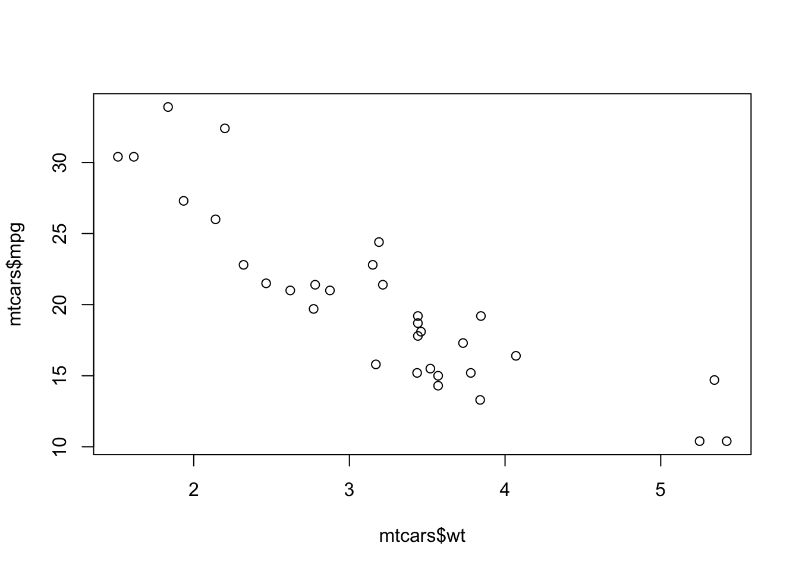

2 Interfacce e ambienti
v1.1 30/10/2023
2.1 Cosa c’è da imparare in questo capitolo.
A questo punto dovresti già aver installato R e RStudio e la libreria Rcmdr, necessaria per eseguire l’interfaccia grafica di R Commander. Se non lo hai fatto, ti tocca tornare al capitolo 1 (senza passare dal via).
In questo capitolo imparerai abbastanza dell’ambiente di sviluppo RStudio (nella sua versione gratuita) da poter eseguire i primi comandi, installare pacchetti, ottenere aiuto e cominciare ad esplorare set di dati o aprire file, tutti argomenti necessari per affrontare i prossimi capitoli. In questo capitolo NON descriverò la GUI di R né R Commander. Le ragioni di questa scelta sono state spiegate nel capitolo 1. Se vuoi saperne di più sulla GUI di R puoi consultare la Sezione 2.4.
2.2 RStudio.
Mentre la GUI di R è sicuramente adatta ai puristi (e, incidentalmente fornisce un interfaccia minima che ti espone al minimo possibile di errori dovuti alla GUI piuttosto che al codice), RStudio è diventato l’ambiente più utilizzato per sfruttare al massimo le potenzialità di R: facilita moltissimo un gran numero di attività di routine (esecuzione di comandi e script, apertura e salvataggio di file, visualizzazione dei grafici, redazione di report, etc.) e attività per utenti più esperti (collegamanto a repositories come GitHub, pubblicazione in rete, accesso al terminale, etc.).
2.2.1 L’interfaccia principale di RStudio.
All’apertura, RStudio mostra una finestra divisa in 3 o 4 pannelli (panes; il pannello del codice, source pane non è sempre presente e, in generale, la configurazione dei pannelli dipende dal contesto e dalle preferenze impostate dall’utente)27.
Figura 2.1: L’interfaccia di RStudio per MacOS.
La barra dei menu include elementi tipici di molti altri software (<File>, <Edit>, <View>, <Window>, <Help>) ed elementi specifici di RStudio, come <Code>, <Plots>, <Session>, <Build>, <Debug>, <Profile>, <Tools>. I menu sono contestuali, con elementi che possono variare in funzione del tab (o scheda) attivo e dei suoi contenuti. Molte funzionalità sono ovvie, altre le descriverò quando sarà necessario. I quattro pannelli principali28 sono:
Source: il pannello del codice, dove verranno creati o aperti script, documenti di R Markdown (un formato per la creazione di rapporti) e altri documenti eseguibili e dove verranno visualizzati oggetti come tabelle (data frame, in R)
Console: è l’equivalente della console di R, ma permette anche di accedere al Terminale (per l’esecuzione di comandi di sistema) e altri pannelli, come, fra le altre cose, quelli di debugging (per esplorare e correggere gli errori di esecuzione delle funzioni). E’ qui che il prompt dei comandi lampeggia sinistramente
Environment: a sua volta contiene una serie di tab o schede che permettono di accedere, fra le altre cose:
Plots: a sua volta contiene una serie di tab che permettono di accedere, a:
Files: un semplice browser della gerarchia dei file nella cartella di lavoro (vedi capitoli 1 e 4)
Plots: è qui che vengono visualizzati i grafici generati durante un’analisi, sotto forma di uno stack (pila) navigabile. Discuteremo di questo aspetto nel capitolo 6
Packages: dove è possibile accedere ai pacchetti installati nel sistema, installarne altri o aggiornarli
Help: permette di accedere alle funzioni di aiuto
Viewer: permette di visualizzare documenti .html
Tutti i pannelli e tab hanno menu contestuali a icone, che permettono di accedere rapidamente alle funzioni più importanti, e, in alcuni casi, campi che consentono di effettuare una ricerca di testo all’interno del pannello. E’ inoltre possibile personalizzare e ridimensionare i pannelli: portando il cursore sul bordo del pannello vedrai apparire una doppia freccia, cliccando e trascinato puoi ridimensionare; cliccando sui rettangoli in alto a destra in ogni pannello puoi collassarli o espanderli.
RStudio è un’interfaccia complessa e molto ricca di funzionalità e non ha molto senso descriverle dettagliatamente tutte. Nella Sezione 2.4 troverai riferimenti a filmati, documenti e pagine web. Di seguito, esploreremo le funzioni più importanti dei pannelli principali, mentre altre saranno descritte ogni volta che sarà necessario.
2.2.2 Il pannello Source.
Bene, ora tocca a te esplorare l’interfaccia. Apri un nuovo file di script. Puoi farlo via menu (<File -> New file -> R script>), con la sequenza di tasti <cmd-shift-N>, o usando l’icona ad accesso rapido per la creazione di nuovi file.
Figura 2.2: Aprire un nuovo file di script.
Il risultato è una finestra desolantemente (o promettentemente) vuota, nella quale puoi scrivere comandi che potranno essere eseguiti singolarmente o in batch (più righe o l’intero script) per automatizzare un flusso di analisi. La finestra non è altro che un piccolo editor di testi, con alcune funzioni che rendono particolarmente conveniente l’uso di RStudio rispetto alla GUI di R.
Prova ora a scrivere i comandi visualizzati nella figura 2.3, uno per volta, premendo il tasto invio alla fine di ogni riga. Noterai, mentre scrivi, che RStudio offre una serie di suggerimenti (vedi l’esempio per mean()), che è possibile autocompletare premendo il tasto di tabulazione, generando ulteriori suggerimenti o facendo apparire dei piccoli “fumetti” che fungono da promemoria per la sintassi di una funzione o addirittura aprendo e chiudendo parentesi e virgolette per te. Prova con mean: inizia a scrivere lentamente, una lettera per volta, e vedrai che appare un piccolo menu a tendina, le cui opzioni si restringono man mano che vai avanti. Puoi usare i tasti freccia in basso o in alto per navigare nel menu e premere tab o cliccare con il mouse quando sei soddisfatt*30. La funzione verrà completata (compresa di parentesi), e il cursore verrà posizionato all’interno delle parentesi: nota come spostando il cursore dopo una parentesi chiusa sia possibile individuare la parentesi aperta corrispondente, una cosa utilissima quando ci sono molte parentesi annidate!. A questo punto, all’interno delle parentesi scrivi mtcars$mpg, senza premere invio31.

Figura 2.3: Il mio primo script.
Avrai notato che premendo invio non viene prodotto alcun output: il cursore si muove semplicemente alla riga successiva. La differenza fondamentale fra il pannello Source e la Console è che i comandi scritti nel primo non sono destinati ad essere eseguiti in modo interattivo, ma, appunto, in gruppi o tutti insieme.
A questo punto dovresti avere nella console i seguenti comandi:
data(mtcars)
help("mtcars")
View(mtcars)
plot(mtcars$wt, mtcars$mpg)
mean(mtcars$mpg)Prova a selezionarli tutti e a premere <cmd-invio> o ad usare l’icona di accesso rapido Run che vedi in alto nel pannello Source32. Il risultato è nella figura 2.4.
Figura 2.4: L’output del mio primo script.
Ed ecco qui l’output inserito direttamente in questo testo33:
## mpg cyl disp hp drat wt qsec vs am gear carb
## Mazda RX4 21.0 6 160.0 110 3.90 2.620 16.46 0 1 4 4
## Mazda RX4 Wag 21.0 6 160.0 110 3.90 2.875 17.02 0 1 4 4
## Datsun 710 22.8 4 108.0 93 3.85 2.320 18.61 1 1 4 1
## Hornet 4 Drive 21.4 6 258.0 110 3.08 3.215 19.44 1 0 3 1
## Hornet Sportabout 18.7 8 360.0 175 3.15 3.440 17.02 0 0 3 2
## Valiant 18.1 6 225.0 105 2.76 3.460 20.22 1 0 3 1
## Duster 360 14.3 8 360.0 245 3.21 3.570 15.84 0 0 3 4
## Merc 240D 24.4 4 146.7 62 3.69 3.190 20.00 1 0 4 2
## Merc 230 22.8 4 140.8 95 3.92 3.150 22.90 1 0 4 2
## Merc 280 19.2 6 167.6 123 3.92 3.440 18.30 1 0 4 4
## Merc 280C 17.8 6 167.6 123 3.92 3.440 18.90 1 0 4 4
## Merc 450SE 16.4 8 275.8 180 3.07 4.070 17.40 0 0 3 3
## Merc 450SL 17.3 8 275.8 180 3.07 3.730 17.60 0 0 3 3
## Merc 450SLC 15.2 8 275.8 180 3.07 3.780 18.00 0 0 3 3
## Cadillac Fleetwood 10.4 8 472.0 205 2.93 5.250 17.98 0 0 3 4
## Lincoln Continental 10.4 8 460.0 215 3.00 5.424 17.82 0 0 3 4
## Chrysler Imperial 14.7 8 440.0 230 3.23 5.345 17.42 0 0 3 4
## Fiat 128 32.4 4 78.7 66 4.08 2.200 19.47 1 1 4 1
## Honda Civic 30.4 4 75.7 52 4.93 1.615 18.52 1 1 4 2
## Toyota Corolla 33.9 4 71.1 65 4.22 1.835 19.90 1 1 4 1
## [1] 20.09062Qui, per rendere l’output meno lungo, qui ho stampato solo 20 righe di mtcars usando il comando head(mtcars, 20).
Come potrai notare:
nel pannello Source è apparsa, in un nuovo tab, la tabella corrispondente all’oggetto
mtcars;nella Console è apparso “l’eco” dei comandi (come se fossero stati scritti ed eseguiti lì) e il risultato della funzione
mean(mtcars$mpg), che calcola appunto la media aritmetica della variabilempgdel data framemtcars;nel pannello Environment è apparso l’oggetto
mtcars;nel pannello Plot è apparso il grafico a dispersione delle due variabili
weightempg;cliccando sul tab Help del pannello Plot è possibile vedere l’output della funzione
help("mtcars"), una descrizione di questo particolare set di dati, uno dei molti inclusi con la versione base e i pacchetti di R
Nota inoltre che il nome del tab dello script è in rosso (Untitled1): puoi facilmente attivare questo tab cliccando sul titolo e salvare lo script con <File->Save>, che aprirà la caratteristica finestra di salvataggio del tuo sistema operativo34.
Eccellente! Hai condotto la tua prima (micro)analisi grafica e statistica con R operando in modo “batch”. Adesso prenditi un po’ di tempo per esplorare il tab contenente i dati, cliccando sui nomi delle variabili, usando la barra di scrolling, provando ad usare l’icona filter o a scrivere qualcosa nel campo di ricerca (con la lente d’ingrandimento). Quando sei pront* chiudi questo tab cliccando sulla piccola x immediatamente a fianco del nome del tab35.
Prova ora ad esplorare il tab dello script (che dovrebbe avere il nome Untitled1, o qualcosa di simile) e le icone di accesso rapido. Nota come le righe siano numerate e come una barra verticale grigia segni il limite di 80 caratteri.36 Dato che si tratta di un piccolo editor di testi puoi usare funzioni come trova e sostituisci, conta parole, (menu <Edit>) etc.: in realtà, potresti scrivere uno script di R in qualsiasi editor di testi e incollarlo in una finestra di script vuoto o salvarlo come testo e aprirlo in RStudio… Chiudendo questo tab (come per il precedente basta cliccare sulla x accanto al nome) apparirà un menu a comparsa che ti chiederà se vuoi salvare lo script. Puoi scegliere una qualsiasi delle opzioni: torneremo sul salvataggio degli script più avanti.
2.2.3 Il pannello Console.
Prova ora a scrivere i comandi direttamente nella Console, premendo invio alla fine di ogni comando:
>data(mtcars)
>help("mtcars")
>View(mtcars)
>plot(mtcars$wt, mtcars$mpg)
>mean(mtcars$mpg)Stai ora operando in modo interattivo: l’effetto di ogni comando è immediato37, ma non è differente da quello che hai osservato prima38.
Prova ora a scrivere, sempre nella Console, i seguenti comandi:
>1+2*log10(10)-3
>a <- 1L
>b = c("a","b","c")
>c <- c(1, 2, 3)
>list(numero = a, vettore_string = b) -> la_mia_prima_lista
>calcola_media <- function(vettore_numerico){mean(vettore_numerico)}
>c
>calcola_media(c)- Il primo comando permette di dimostrare come la console possa funzionare come una piccola calcolatrice, restituendo immediatamente il risultato di un calcolo, senza attribuirlo a nessun oggetto (il risultato è qui sotto).
## [1] 0Il secondo comando assegna un oggetto (un vettore di lunghezza 1, con valore 1, intero) al nome
a.il terzo comando assegna al nome
bil valore di un vettore carattere di lunghezza 3 (un oggetto).il quarto comando assegna al nome
cun vettore di numeri (reali) di lunghezza 3 (un oggetto).il quinto comando assegna al nome
la_mia_prima_listauna lista (un particolare oggetto di R vedi capitolo 3).il sesto comando assegna al nome
calcola_mediauna funzione definita dall’utente.il settimo comando “stampa” nella console il valore dell’oggetto c.39
l’ottavo comando usa il vettore c come argomento della funzione
calcola_mediae invia il risultato alla console40
Ed ecco i risultati:
## [1] 0a <- 1L
b = c("a","b","c")
c <- c(1, 2, 3)
list(numero = a, vettore_string = b) -> la_mia_prima_lista
calcola_media <- function(vettore_numerico){mean(vettore_numerico)}
c## [1] 1 2 3## [1] 2Della sintassi di questi comandi discuteremo più avanti. E’ importante notare come:
il primo comando produce un output (il risultato del calcolo) nella console, ma non determina la creazione di nessun oggetto nell’ambiente. Il settimo comando usa un oggetto già creato per ottenere un output nella console.
i comandi da 2 a 6 creano oggetti (che appaiono nel pannello Environment, vedi dopo) ma non producono un output nella Console.
tre comandi (vedi sotto) usano tre modi, tutti validi, di attribuire valori, ma il preferito è sicuramente il secondo (
c <- c(1, 2, 3))
# assegnare con =
b = c("a","b","c")
# assegnare con <-, il modo preferito
c <- c(1, 2, 3)
# assegnare con ->
list(numero = a, vettore_string = b) -> la_mia_prima_listaBene!!!: con poco sforzo, sei riuscit* a scrivere i primi comandi in R, a creare oggetti e a fare calcoli!!!
Incidentalmente, il pannello Console contiene altri tab, alcuni contestuali, come quelli relativi a RMarkdown41 o per il debugging42) e altri come Terminal43 e Jobs44 sono decisamente destinati a utenti meno “pigri”.
2.2.4 Il pannello Environment.
E’ un pannello particolarmente importante, che può contenere diversi tab, che ti troverai ad usare di frequente.
2.2.5 Il tab Environment.
Il tab Environment del pannello Environment permette di esplorare l’ambiente di lavoro e gli oggetti in esso contenuti, di salvare e importare oggetti di diverso tipo. Il piccolo spazio con la lente di ingrandimento in alto a destra, come di consueto, consente di condurre una ricerca per nome in ambienti particolarmente affollati.
Figura 2.5: Il pannello Environment.
Se hai seguito le istruzioni del paragrafo precedente, il tuo ambiente di lavoro dovrebbe contenere gli stessi oggetti riportati nella figura 2.5. Alcuni dei tasti di accesso rapido e dei menu contestuali possono variare in funzione di azioni precedenti o delle versioni di RStudio. Nel capitolo 4 descriverò in dettaglio come aprire e salvare file, ma, per iniziare possiamo fare una piccola prova:
clicca sull’icona per il salvataggio dell’ambiente (il floppy disk), nella finestra di salvataggio che si apre scegli una destinazione e un nome per il file e clicca su
<Save>. In questo modo hai salvato l’intero ambiente di lavoro sotto forma di file binario.Rdata: questo formato contiene sia gli oggetti che i loro nomi45. Contemporaneamente, vedrai apparire nella console l’eco di questo comando da menu.clicca sulla piccola icona a forma di scopa: questo comando richiede una conferma ed elimina tutti gli oggetti dall’ambiente di lavoro.46. Anche in questo caso lo stesso risultato poteva essere ottenuto con un comando.47
usa l’icona a forma di cartella per riaprire il file che avevi salvato al punto 1: vedrai riapparire esattamente gli stessi oggetti.
Prova ora a “esplorare” gli oggetti, cliccando, dove esistono, sui piccoli triangoli bianchi su sfondo blu accanto ai nomi, o sui nomi degli oggetti: osserva l’effetto delle tue azioni e guarda cosa appare nella Console in seguito ad ogni azione…
2.2.6 Il tab History.
Il tab History del pannello Environment consente di accedere rapidamente ai comandi eseguiti. La “storia” dei comandi può essere salvata48 e i file salvati possono essere aperti nel medesimo tab. Gruppi di comandi selezionati possono essere spostati nella Console o nello script attivo nel pannello degli Script, dove poi possono essere eseguiti. E’ inoltre possibile rimuovere singoli comandi, o, usando l’icona a forma di scopa, l’intera storia dei comandi.
Incidentalmente, è possibile richiamare i comandi direttamente dalla Console, usando i tasti <freccia su> (richiama i comandi precedenti) o <freccia giù> (richiama quelli successivi al comando appena richiamato, se esistono).
Figura 2.6: Il tab History.
Prova tu stess*:
attiva la Console cliccando al suo interno o con la combinazione di tasti
<ctrl-2>;usa il tasto
<freccia su>per scorrere fra i comandi, scegline uno e eseguilo premendo invio.prova a salvare tutta la History, cancellarla e importare quella salvata.
2.2.7 Il pannello Plots.
Il pannello Plots dà accesso a diverse risorse importanti, tramite i tab Plots, Files, Packages, Help e Viewer. I primi 4 verranno descritti in maggiore dettaglio qui sotto; l’ultimo tab (Viewer) permette di esplorare documenti .html, come quelli generati a partire da RMarkdown.
2.2.8 Il tab Plots.
Il tab Plots del pannello Plots, croce e delizia degli utenti di RStudio, è mostrato nella figura 2.7.
Figura 2.7: Il tab Plots.
La figura mostra l’output del comando plot(mtcars$wt, mtcars$mpg), con un grafico a dispersione un tantino minimalista49. Il tab accumula, sotto forma di stack (pila) i grafici prodotti dalla sessione. E’ possibile navigare in questo tab usando le icone ad accesso rapido o il menu <Plots>. Fra le icone ad accesso rapido di questo tab:
le due frecce permettono di navigare fra i grafici prodotti;
il tasto Zoom permette di ingrandire il grafico e di ridimensionarlo dinamicamente (trascinandone i bordi): questa caratteristica può generare confusione perché, se si salva il grafico, le dimensioni e il rapporto fra le proporzioni50 non sono quelle visibili nel pannello. Il tasto Export apre un menu a comparsa che consente di esportare il grafico in un formato immagine51;
i due tasti successivi consentono di eliminare dallo stack il grafico corrente o tutti i grafici
l’opzione Publish permette di pubblicare il grafico online52
Discuteremo in maggiore dettaglio della grafica con R nel capitolo 6.
2.2.9 Il tab Files.
Il tab Files del pannello Plot permette di navigare il file system del tuo computer. La barra dei menu mostra il percorso di cartelle e sottocartelle (in genere a partire dalla Home). Cliccando sui file è possibile aprirli (in RStudio o con l’applicazione più adatta).
Figura 2.8: Il tab Files.
Prova (con un po’ di prudenza) a esplorare questo tab e, in particolare, il menu a comparsa disponibile sotto l’icona More.
2.2.10 Il tab Packages.
Il tab Packages del pannello Plot è, indubbiamente, uno dei più utili: è qui che, con poco sforzo, puoi verificare quale pacchetti sono installati nella tua libreria, aggiornarli, caricarli nell’ambiente di lavoro, esplorarne l’aiuto, installarne di nuovi etc.53 I tasti di accesso rapido e le funzioni di questo tab sono molto intuitivi, e non necessitano di particolari spiegazioni, nemmeno per i più pigri.
Figura 2.9: Il tab Packages.
Per dimostrare l’uso di questo tab:
osserva come i pacchetti caricati nell’ambiente hanno un segno di spunta; per ogni pacchetto è disponibile una breve descrizione;
cliccando sul nome di un pacchetto è possibile accedere all’aiuto del pacchetto;
le due piccole icone alla fine di ogni riga consentono di visualizzare un pacchetto sul repository del CRAN ed eliminarlo dalla libreria;
il tasto Update richiama una lista dei pacchetti per i quali è disponibile una versione più aggiornata; il menu a comparsa che si apre è di uso molto intuitivo e non richiede particolari spiegazioni;54
il tasto Install ti consente di installare, in maniera interattiva, nuovi pacchetti; come si vede dalla figura 2.9 mentre digiti ti appariranno delle opzioni di autocompilazione; è inoltre possibile installare più di un pacchetto contemporaneamente.
Prova ora a installare il pacchetto tidyverse: si tratta di un insieme di pacchetti per la scienza dei dati che useremo spessissimo in questo libro, basati sul concetto di tidy data, di cui parleremo ampiamente nel capitolo 955.
Come sempre, è possibile utilizzare i comandi per:
sapere quali pacchetti sono installati nella tua libreria;
installare nuovi pacchetti;
caricarli in memoria;
Un esempio di codice è riportato di seguito (nota come tutte queste funzioni sono usate con le opzioni di default; nel capitolo 3, dedicato all’aiuto, esploreremo in dettaglio altre opzioni)
# il comando successivo assegna l'elenco dei pacchetti disponibili in libreria
# (un vettore carattere) al nome mypckgs
# i cui primi elementi vengono poi stampati a Console
> mypckgs <- installed.packages()
> head(mypckgs, n = 5L)
# installa il pacchetto car, un pacchetto di strumenti per la regressione
> install.packages("car", repos = "https://cran.mirror.garr.it/CRAN/")
# carica il pacchetto nell'ambiente di lavoro: è anche possibile usare require()
> library(car)2.2.11 Il tab Help.
Anche questo tab è disponibile nel pannello Plots. Questo è probabilmente uno dei tab che “visiterai” più spesso. Le sue funzionalità verranno descritte nel capitolo 3.
Le icone di accesso rapido e i campi di ricerca sono piuttosto intuitivi: prova a cercare aiuto sulle funzioni che sono state illustrate nei paragrafi precedenti o a raggiungere la “Home” e esplorare alcuni degli argomenti dell’aiuto, in particolare quelli relativi alla IDE di RStudio.

Figura 2.10: Il tab Help.
2.3 Esercizi.
Bene, come hai visto, qualche piccolo esercizio ti è stato proposto nei paragrafi precedenti. Per quanto pigri, senza pratica ed esercizio non c’è proprio modo di imparare ad usare R. Nei capitoli successivi ti proporrò qualche esercizio un pochino più complesso. Ricorda che sono disponibili risorse interattive, come learnR. Alcuni tutorial online sono disponibili qui.
2.4 Altre risorse.
Come sempre, ti indicherò soltanto le risorse minime che ritengo migliori o più efficaci da un punto di vista didattico. Sentiti liber* di esplorare secondo il tuo estro il vasto mare della documentazione su R.
2.4.1 Risorse in italiano.
Documenti e pagine web
Purtroppo i documenti e le pagine su R in lingua italiana sono piuttosto rar* e spesso non aggiornat*. Un manuale vecchiotto sul linguaggio è qui. Francamente non sono riuscito a trovare altro che valga la pena di citare (se non forse il materiale, piuttosto formale, per qualche corso universitario).
Video.
Un video di Federica web learning sull’installazione di R e RStudio con una breve descrizione delle interfacce
2.4.2 Risorse in inglese.
Documenti e pagine web.
Ecco una selezione di eccellenti capitoli introduttivi da libri in inglese, tutti disponibili online e gratuiti (se siete pigri sceglietene uno qualsiasi):
Il capitolo 1 di ModernDive
Il capitolo 1 di Just enough R
Il capitolo 3 di R and RStudio basics (un po’ più orientato al lavoro nel cloud)
Il materiale didattico presente sul sito di RStudio Education è eccellente e prevede percorsi differenziati per utenti principianti, intermedi ed avanzati. Potete scaricare una cheat sheet per la IDE di RStudio qui. In generale le cheat sheet forniscono un riferimento rapido all’interfaccia e ai comandi ed è sempre utile averle a portata di mano.
Molti altri eccellenti e dettagliati documenti sono disponibili nella sezione sulla documentazione del CRAN. In particolare un manuale (vecchiotto) per R commander è qui.
Video.
Ci sono probabilmente migliaia di video che descrivono l’installazione di R, RStudio e le relative GUI. Questo è un buon esempio (circa 50 min). Il video ufficiale di RStudio è qui.
Un video di circa 30 minuti sulle GUI di R, R commander e RStudio con sottotitoli accettabili è qui
Per diversi video è possibile attivare i sottotitoli in italiano (con pochissime garanzie sulla qualità delle traduzioni).
incluso lo schema di colori, visita le
<Preferences>sotto la voce<Appearence>,<Pane layout>, etc.↩︎è possibile spostarsi rapidamente fra questi pannelli usando l’abbreviazione di tastiera
<ctrl-1>,<ctrl-2>,<ctrl-3> o<ctrl-4>; nel menu<View>viene indicata come<^1>etc.↩︎o persino una sessione precedente; R può ricaricare, all’apertura, l’ambiente e la storia della sessione precedente↩︎
Questo libro è assolutamente gender neutral, ma spero di riuscire a ricordarmelo sempre.↩︎
se premessi invio, semplicemente, la parentesi chiusa andrebbe a capo, provare per credere↩︎
in altri casi
<Run>permette di aprire un menu contestuale con molte opzioni diverse↩︎RMarkdown consente di integrare i risultati dell’analisi statistica e grafica in un testo come questo; ne parleremo diffusamente più avantiriferimento↩︎
in questo caso è possibile scegliere la destinazione del file↩︎
niente paura, potremo riaprire il tab View per l’oggetto
mtcarsin almeno due modi diversi↩︎un residuo dell’era dei dinosauri↩︎
se il comando è completo ed interpretabile, altrimenti otterrai un cursore a forma di
+che indica che R è in attesa del completamento del comando, o un messaggio di errore↩︎e incidentalmente corrisponde a quello che sarebbe accaduto se avessi premuto
<cmd-invio>al termine di ogni riga dello script, provare per credere.↩︎è l’equivalente di scrivere
print(c)↩︎l’equivalente è scrivere mean(c)↩︎
la libreria di R usata per creare report, e, fra le altre cose, questo libro↩︎
la ricerca di errori in una funzione o, più in generale, nel codice↩︎
accesso diretto allo shell di sistema, per interagire con il sistema operativo tramite la linea di comando; può essere utile per lanciare programmi non accessibili tramite l’interfaccia grafica↩︎
consente di avviare l’esecuzione di script R o Python in “background”, permettendo di condurre calcoli lunghi o complicati mentre l’utente usa la sessione di RStudio per altri scopi↩︎
questo è equivalente a usare il comando
save.image(); vedremo che è possibile salvare anche solo alcuni degli oggetti usando il comandosave()↩︎non preoccuparti, li recuperiamo fra un attimo o puoi eseguire i comandi descritti nei paragrafi precedenti↩︎
rm(list = ls())↩︎con estensione .Rhistory↩︎
le opzioni del comando plot() sono formidabili, e difficili da ricordare…↩︎
che, di default, rispetta la sezione aurea, con un rapporto di 1,61 fra larghezza e lunghezza↩︎
è meglio non fare troppo conto su questa opzione, perché la risoluzione di esportazione è quella dello schermo, ampiamente insufficiente per una pubblicazione scientifica↩︎
se avete settato correttamente le opzioni nelle preferenze↩︎
naturalmente, è possibile fare tutte queste cose con i comandi, vedi dopo↩︎
in alcuni casi, durante il processo di aggiornamento ti verrà segnalato che esiste una versione “source” più aggiornata della versione “binary” e ti verrà offerta l’opzione se installare la versione più aggiornata, che potrebbe richiedere la compilazione; in questo caso potresti avere bisogno fi alcuni strumenti di sviluppo, installabili direttamente dal sito del CRAN (compilatori C++ o FORTRAN) se non sono già presenti sul tuo sistema; in linea di massima è più semplice installare le versioni binarie, che non richiedono compilazione↩︎
nota come la casella
Install dependenciesdel menu a comparsa Install è selezionata di default: le “dependencies” sono i pacchetti da cui, letteralmente, dipende il pacchetto che stai installando, perché le funzioni del pacchetto, a loro volta, ne usano le funzioni; installando alcuni pacchetti vedrai installate numerosissime dependencies, quindi la tua libreria si arricchirà rapidamente↩︎